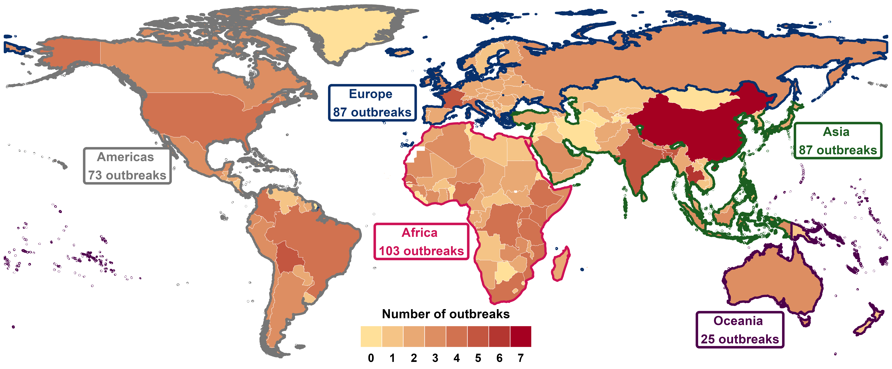
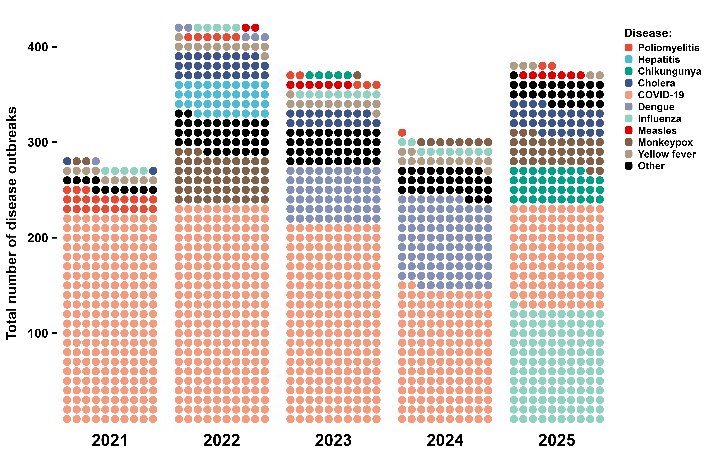
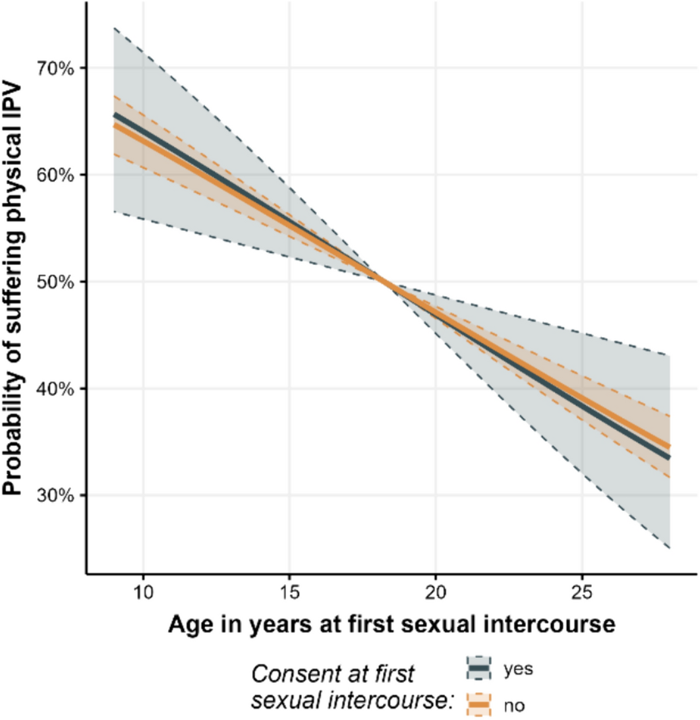
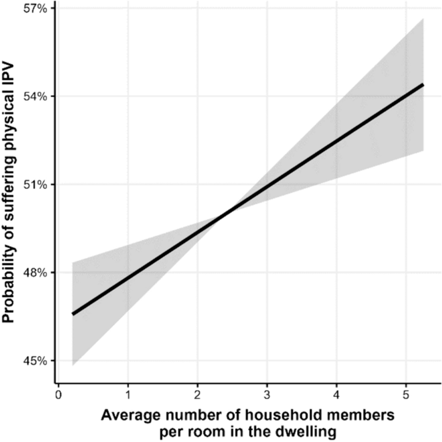
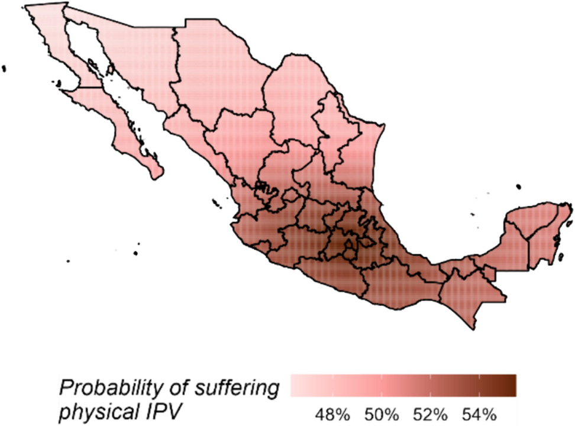

Presentación preparada para la posición de
Investigador Postdoctoral de Economía
Escuela de Ciencias Sociales y Gobierno
Tecnológico de Monterrey
June 23, 2026
Bachelor of Economics, Universidad Autónoma de Coahuila.
Master in Applied Statistics, Instituto Tecnológico y de Estudios Superiores de Monterrey.
PhD in Applied Statistics and Empirical Methods, Georg-August-Universität Göttingen. PhD dissertation: “Essays on structured additive regression models with applications in development economics” (summa cum laude).
Norwegian Refugee Council:
Forced displacement due to armed conflict in Sudan.
Socio-economic impacts of disaster displacement in Bangladesh, Nigeria, Guatemala, and Kenya.
Norwegian Refugee Council:
Forced displacement due to armed conflict in Sudan.
Socio-economic impacts of disaster displacement in Bangladesh, Nigeria, Guatemala, and Kenya.
United Nations Institute for Disarmament Research:
Social, economic, and health impacts of armed conflict in Nigeria, Niger, Chad, Cameroon, Iraq, and Colombia.
Return and reintegration of families following the ISIL conflict in Iraq.
Child recruitment by Boko Haram in Nigeria.
Firearm possession among civilians in Nigeria.
United Nations Office on Drugs and Crime:
United Nations Office on Drugs and Crime:
UN Women:
United Nations Office on Drugs and Crime:
UN Women:
UN Migration:
Broadly speaking, the goal of my academic work is to provide scientific evidence to better understand how individuals, families, and communities experience, adapt to, and cope with humanitarian- and development-related phenomena such as armed conflict, violence, climate change, poverty, and forced displacement. To address this question, I integrate statistical methods, machine learning algorithms, and data science techniques.
Broadly speaking, the goal of my academic work is to provide scientific evidence to better understand how individuals, families, and communities experience, adapt to, and cope with humanitarian- and development-related phenomena such as armed conflict, violence, climate change, poverty, and forced displacement. To address this question, I integrate statistical methods, machine learning algorithms, and data science techniques.
Specific lines of research:
Risk factors for crime and gender-based violence victimization.
Individual-, community-, and regional-level correlates of poverty (income, food insecurity, energy poverty, etc.).
Insights and forecasts for humanitarian emergencies (armed conflict, disease outbreaks, forced displacement, etc.).
OBJECTIVE: To identify and describe how factors from the ecological model relate to crime and violence victimization, with a focus on the most vulnerable groups (women and girls).
OUTPUTS: (1) Three peer-reviewed papers (J. of Gender-Based Violence, J. of Computational Social Science, and J. of interpersonal violence). (2) Two working papers (Ibero-America Institute for Economic Research and Inter-American Development Bank)
OBJECTIVE: To identify and describe how factors from the ecological model relate to crime and violence victimization, with a focus on the most vulnerable groups (women and girls).
OUTPUTS: (1) Three peer-reviewed papers (J. of Gender-Based Violence, J. of Computational Social Science, and J. of Interpersonal Violence). (2) Two working papers (Ibero-America Institute for Economic Research and Inter-American Development Bank)
IMPACT: (1) Over 100 citations. (2) Supervision of two Master’s theses at the Universidad Autónoma de Nuevo León and Ludwig-Maximilians-Universität München.
OBJECTIVE: To assess how a set of conditions shape patterns of poverty, with particular emphasis on the extreme poor.
OUTPUTS: (1) Three peer-reviewed papers (J. of Applied Economics, Social Sciences, and PloS one). (2) Two working papers (Ibero-America Institute for Economic Research)
OBJECTIVE: To assess how a set of conditions shape patterns of poverty, with particular emphasis on the extreme poor.
OUTPUTS: (1) Three peer-reviewed papers (J. of Applied Economics, Social Sciences, and PloS one). (2) Two working papers (Ibero-America Institute for Economic Research)
IMPACT: (1) Over 10 citations. (2) Cited in the Regional Human Development Report 2025 by UNDP.
OBJECTIVE: To identify whether, how, where, and when humanitarian emergencies have occurred and may occur in the future.
OUTPUTS: (1) Four peer-reviewed papers (Frontiers in Climate, Scientific data, BMC public health, and BMJ). (2) Six working papers (UNIDIR, and UNU).
OBJECTIVE: To identify whether, how, where, and when humanitarian emergencies have occurred and may occur in the future.
OUTPUTS: (1) Four peer-reviewed papers (Frontiers in Climate, Scientific data, BMC public health, and BMJ). (2) Six working papers (UNIDIR, and UNU).
IMPACT: (1) Over 60 citations. (2) 2023 ENLIGHT Open Science Award and was a finalist for the Falling Walls Science Breakthroughs. (3) UNOCHA’s Humanitarian Data Exchange initiative. (4) Scientific and Technical Advisory Group of the Emergency Events Database (EM-DAT). (5) Cited in the The Future of Peacekeeping: New Models and Related Capabilities (UN), Preparedness for Epidemics and Pandemics (World Bank), and Climate Risk Toolbox (FAO).
A collaborative project of:
The project was made possible through financial support from the ENLIGHT network, the German Academic Exchange Service (DAAD), and the Federal Ministry of Education and Research (BMBF) in Germany.
GOAL: To create a database containing all events with epidemic or pandemic potential to escalate into health crises, enabling the analysis of three core questions: when disease outbreaks occur, which diseases drive them, and where these events occur.
GOAL: To create a database containing all events with epidemic or pandemic potential to escalate into health crises, enabling the analysis of three core questions: when disease outbreaks occur, which diseases drive them, and where these events occur.
To create this, I employed a three-step methodology:
Data collection
Data processing
Data analysis
Information was sourced from the WHO Disease Outbreak News (DONs) via web scraping using the RSelenium package in R.
I created a code in to transform unstructured information into a database by:
Text mining and language processing
Entity extraction (country, disease, year)
Harmonization to international standards
The last version of the dataset was updated in February 2026 and contains information on 3501 outbreaks, associated with 91 pathogens that occurred since January 1996 in 236 countries and territories worldwide.
Sub-Saharan Africa bears the highest burden of disease outbreaks, with a clear spatial cluster around the Democratic Republic of the Congo.
Following the COVID-19 pandemic, multiple diseases have emerged or re-emerged, including vaccine-preventable diseases and pathogens that had previously been largely controlled or eliminated. There is a shift toward vector-borne and waterborne transmission pathways.
Geographic distribution of disease outbreaks in 2025

Disease outbreaks in the world, 2021-2025

GOAL: To identify and describe the extent to which a comprehensive set of risk factors from the ecological model are associated with physical intimate partner violence (IPV) victimization in Mexico
To achieve this goal I employed a three-step methodology:
Data collection
Model building, fitting, and assessment
Findings
Dataset of 35,000 observations and 42 theoretical correlates from 10 data sources was created, covering four levels of the ecological model:
Caracteristics of the woman: age, income, education, age at her first sexual intercourse, etc.
Caracteristics of the woman’s partner: age, income, education, etc.
Age of the woman at marriage or at cohabitation.
Woman’s level of autonomy in the context of the relationship.
Average number of household members per room in the dwelling.
Division of housework among household members.
Level of social marginalization.
Type of community (rural, urban).
Share of women-headed households.
Homicides against women.
Migration.
Quality of government.
Quality of public services.
Perception of corruption.
Binomial response variable, indicating whether a woman experienced physical violence within an intimate relationship in the past 12 months.
Predictors include:
All these components are specified within a structured additive regression (STAR) model.
Due to its high dimensionality and complex structure, a three-step strategy is used to estimate the STAR model:
It combines estimation with simultaneous variable selection and model choice by iteratively selecting the best-fitting effect at each step.
To ensure unbiased variable selection and model choice, one degree of freedom is assigned to each candidate effect (e.g. linear vs. nonlinear).
To avoid overfitting, cross-validation is used to determine the optimal number of iterations, mitigating multicollinerity.
The boosting algorithm yields the best predictive model, retaining only relevant predictors in their most appropriate functional form.
To avoid selecting non-relevant variables, subsampling generates multiple random subsets, and the boosting algorithm controls the error rate while selecting predictors.
The relative selection frequency for each effect is computed across subsets; effects exceeding a predefined threshold are retained as stable.
The result is a parsimonious model including only stable factors (non-zero coefficients).
Physical IPV victimization risk and women’s age at first sexual intercourse by consent.

Physical IPV victimization risk and average number of household members per room in the dwelling.

Spatial effects of physical IPV victimization risk.

Research on pandemic- and epidemic-prone disease outbreaks
Torres Munguía JA, et al (2022) A global dataset of pandemic- and epidemic-prone disease outbreaks. Nature Scientific Data 9, 683. DOI: 10.1038/s41597-022-01797-2.
Torres Munguía JA, Martínez-Zarzoso I. (2026) Global trends of pandemic-prone and epidemic-prone disease outbreaks in 2024. BMJ Global Health. DOI: 10.1136/bmjgh-2025-020708
A computational approach to gender-based violence